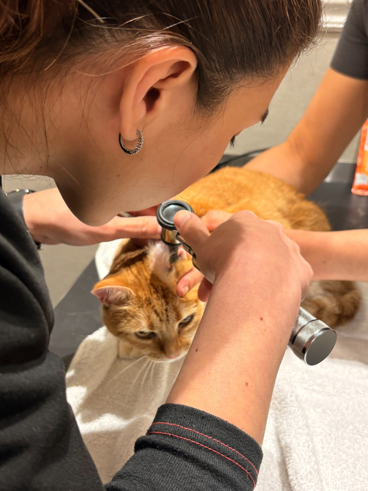

就诊流程
一次规范的幼猫就诊是什么样的
1
问诊
医生会询问疫苗与驱虫史、发病时间、进食与排便情况、是否接触过其他猫。你提前记录的信息在这里价值最大。
2
体格检查
测体温、体重、听心肺、触诊腹部、检查口腔与皮肤、评估脱水程度。幼猫的体重变化是判断病情的重要指标。
3
化验与影像
血常规、生化、粪便检查、传染病快检，必要时做 X 光或 B 超。不同检查解决不同问题，医生会根据表现选择。
4
确诊与沟通
明确是感染、寄生虫、还是其他问题，并说明治疗方案、大致费用与预后。此时的沟通比“先治着看”更重要。
5
治疗与复查
按方案执行，记录每天的精神、食欲、排泄与体温，按约定时间复查。症状好转不等于痊愈，擅自停药容易反复。

常见检查项目
| 项目 | 主要用途 |
|---|---|
| 血常规 | 白细胞、红细胞、血小板；猫瘟常见白细胞下降 |
| 生化 | 肝肾功能、血糖、电解质 |
| 粪便检查 | 寄生虫虫卵、球虫、贾第虫等 |
| 传染病快检 | 猫瘟、猫白血病、免疫缺陷等 |
| X 光 / B 超 | 胸腹水、肠套叠、异物、器官形态 |
治疗手段
不同疾病，治疗逻辑不一样
幼猫治疗的核心往往不是“杀病原”，而是先稳住生命体征：补液、保温、止吐、营养支持，再针对病因处理。
输液与电解质纠正
脱水与电解质紊乱是幼猫最常见的直接威胁。静脉或皮下补液能迅速改善循环，是呕吐腹泻病例的基础治疗。
止吐、止泻与胃肠保护
在明确病因前，盲目止泻可能掩盖病情。医生会根据情况使用止吐药、胃黏膜保护剂，并调整饮食。
抗病毒与抗生素
病毒性疾病以支持治疗为主，抗生素仅用于继发细菌感染。是否使用、用哪种，需要医生判断。
营养支持
幼猫不能长时间禁食。食欲差时可用处方罐头、营养膏，必要时放置鼻饲管，避免低血糖与脂肪肝。
雾化、输血与手术
呼吸道症状可雾化；严重贫血可能需要输血；肠套叠、异物等则需要手术干预。
住院隔离与消毒
传染病幼猫需单独隔离，医护与主人接触后都要消毒，避免把病毒带回家中的其他猫。
预后与费用
现实一点看：时间、钱与预期
幼猫救治的效果，很大程度取决于就诊时间。同样的猫瘟，发病 12 小时内就诊与拖到第三天，结局可能完全不同。
| 疾病 | 治疗周期 | 费用量级（参考） | 预后关键 |
|---|---|---|---|
| 猫瘟 | 5～7 天住院为主 | 数千元 | 就诊越早、白细胞越低越危险 |
| 猫鼻支 | 1～3 周 | 数百至数千元 | 能否进食、是否继发肺炎 |
| 猫癣 | 4～12 周 | 数百元 | 坚持用药与环境消毒 |
| 寄生虫 | 1～3 次驱虫 | 数百元 | 虫种判断是否准确 |
| FIP | 数月 | 较高，需提前评估 | 确诊时间与治疗方案 |
费用说明：上表只是量级参考，实际费用与城市、医院等级、用药方案、住院天数有关。建议就诊时先问清“检查费 + 治疗费 + 住院费”的构成，再决定方案。
家庭护理
出院之后，别松劲

每天记录四件事
- 进食量与饮水量
- 排便次数与性状（拍照留存）
- 体温（按医嘱测量）
- 精神状态与活动量
按时复查：症状消失不代表痊愈。猫瘟、猫鼻支、猫癣都需要按疗程完成，提前停药容易复发或产生耐药。
环境消毒：病愈后彻底清洁猫砂盆、食盆、猫窝与地面；猫瘟污染的环境需要含氯消毒剂并充分作用时间。
别急着“补身体”：刚出院的幼猫胃肠仍脆弱，按医嘱少量多餐，不要突然换粮或喂大量零食。